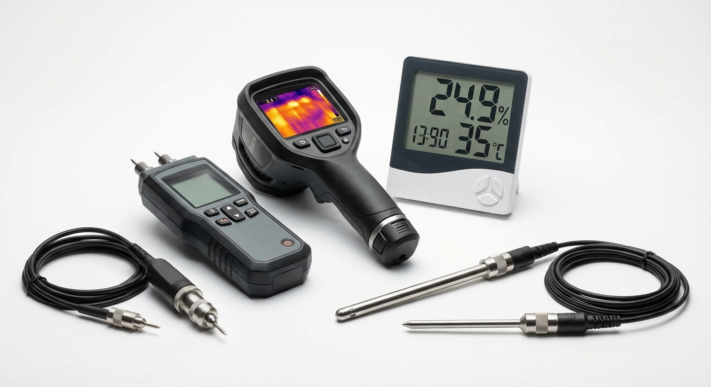
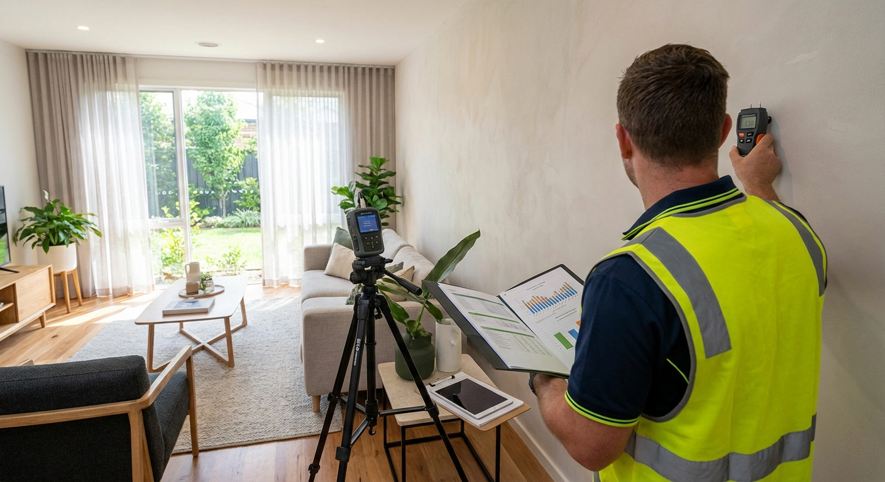
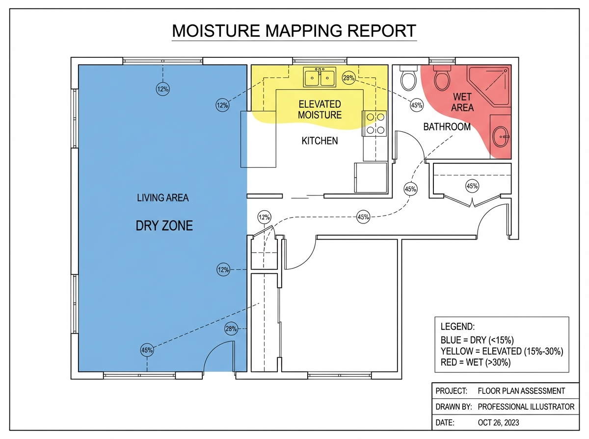

Professional Testing Protocols & Australian Standards Compliance
Environmental assessment and testing is mandatory under Australian regulations for:
| Standard | Application | Sampling Method | NATA Requirement | Typical Cost (AUD) |
|---|---|---|---|---|
| AS 4964:2004 | Asbestos in bulk materials | Representative sampling | Mandatory | $150-300 per sample |
| AS/NZS 4361.2:2017 | Lead paint testing | XRF or lab analysis | Mandatory for lab | $50-120 per sample |
| AS/NZS 3666:2011 | Mould assessment | Air and surface sampling | Recommended | $200-500 per suite |
| AS 1668.2:2012 | Indoor air quality | Continuous monitoring | Mandatory | $800-1500 per assessment |
| NEPM 2013 | Soil contamination | Grid pattern sampling | Mandatory | $180-400 per sample |
Equipment: SafeWork sampling kit, airtight containers, PLM microscopy
Standards: AS 4964:2004, WorkSafe requirements
Cost: $45-80 per kit
Applications: Bulk material identification, clearance testing
Equipment: Niton XRF analyzer, calibration standards
Standards: AS/NZS 4361.2:2017
Cost: $35,000-50,000 (instrument)
Applications: Non-destructive lead detection
Equipment: Air-O-Cell cassettes, viable air samplers, moisture meters
Standards: AS/NZS 3666:2011
Cost: $25-40 per cassette
Applications: Indoor air quality, surface contamination
Equipment: TSI AirAssure, particle counters, VOC meters
Standards: AS 1668.2:2012
Cost: $8,000-15,000
Applications: Continuous monitoring, compliance verification
Pre-sampling Requirements:
| Sample Type | Collection Method | Analysis Type | Interpretation |
|---|---|---|---|
| Air Samples | Spore trap cassettes | Microscopic count | Compare indoor vs outdoor |
| Surface Samples | Tape lift or swab | Direct microscopy | Species identification |
| Bulk Samples | Material collection | Viable plate count | Contamination severity |